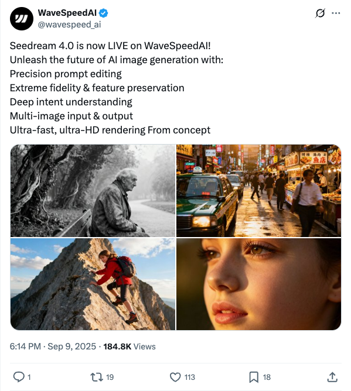

wavespeed_ai_Seedream 4.0发布：AI图像生成新突破
发布时间: 2025-09-09T10:14:20.000Z WaveSpeedAI正式发布Seedream 4.0，标志着AI图像生成领域的新进展。该版本具备精准的提示词编辑、极致的图像保真度与特征保留能力，并能深入理解用户意图。此外，它支持多图像输入输出，并提供超高速、超高清的渲染效果，旨在从概念阶段就提供卓越的图像生成体验。
2025-09-09
WaveSpeedAI正式发布Seedream 4.0，标志着AI图像生成领域的新进展。该版本具备精准的提示词编辑、极致的图像保真度与特征保留能力，并能深入理解用户意图。此外，它支持多图像输入输出，并提供超高速、超高清的渲染效果，旨在从概念阶段就提供卓越的图像生成体验。
Nathan Lambert转发并评论了Taylor W. Killian关于K2 Think模型的发布。K2 Think由LLM360构建，基于Qwen 2.5 32B，并非LLM360的K2 65B基座模型。该模型主要为数学推理设计，但表现出多功能性，并已作为推理系统在k2think.ai上线。Lambert还提及团队在开源领域有更多计划。
OpenRouter宣布欢迎NVIDIA加入其平台，并推出了首个模型Nemotron Nano 9B。该模型免费提供，具备128k上下文窗口，从零开始预训练，支持推理能力，并启用了ZDR技术。这标志着OpenRouter在模型生态系统建设方面迈出了重要一步，为用户提供了高性能且易于访问的AI模型。
Ahmad Beirami与Minh Nhat Nguyen的推文探讨了大型语言模型（LLM）在模拟人类非线性推理方面的局限性。Minh Nhat指出，当前LLM的推理和训练多基于线性逻辑，未能充分探索人类思维固有的非线性特征。Beirami则幽默地提出，是否有人正训练LLM以实现类似“宿醉顿悟”的非线性突破性推理。这引发了对LLM未来发展方向及更深层次认知能力模拟的思考，强调了超越线性范式的必要性。
知名AI研究员François Chollet指出，一个真正理解物理定律F=ma的学生，比一个记忆了所有物理教科书的Transformer模型，能解决更多新颖问题。这强调了人类学习中“理解”的重要性，并暗示当前AI模型在泛化和解决未知问题方面仍面临挑战，其能力更多基于模式识别和记忆而非深层理解。
知名AI研究者Thomas Wolf在其推文中提出疑问，指出扩散模型在文本和代码生成领域展现出巨大潜力，但令人不解的是，为何鲜有团队和初创公司专注于此方向的研发与应用。他似乎在呼吁更多关注和资源投入到这一新兴且前景广阔的技术领域，引发了对该技术商业化和产业化进程的思考。
文章指出，谷歌Nano Banana发布不到10天，国产Vidu Q1便推出“参考生图”功能，在图片生成领域实现突破。该功能支持最多7张参考图输入，在一致性、真实性、清晰度及语义理解方面表现卓越，全面超越Flux Kontext并媲美Nano Banana。Vidu Q1尤其强调其“生产级应用”潜力，通过强大的主体一致性和创作自由度，解决AI生成内容常见的跳变问题，使其在电商、广告、媒体等行业具备广泛应用价值，标志着AI视频和图像生成正迈向真正可用的新阶段。
针对视频扩散Transformer (DiT) 模型在生成高分辨率长视频时全注意力机制计算量过大的瓶颈，字节跳动提出双向动态稀疏注意力（BSA）框架。该框架首次对3D全注意力中的Query和Key-Value对进行动态稀疏化，通过Query-Sparse方法优化查询令牌选择，并利用KV-Sparse方法基于统计阈值动态选取关键KV对。实验证明，BSA显著加速了DiT模型训练，计算量减少高达20倍，注意力训练速度提升17.79倍，同时保持甚至超越了全注意力的生成质量，推理延迟也大幅降低。这为视频生成领域带来了效率革命。
DeepMind最新研究成果RoboBallet，由AlphaGo作者Matthew Lai领衔，创新性地将图神经网络（GNN）与强化学习结合，解决了大规模多机械臂协作中的复杂运动规划、任务分配与调度问题。该系统能高效协调多达8个机械臂，实现零碰撞操作，每步规划仅需0.3毫秒，并展现出卓越的零样本泛化能力。RoboBallet通过将场景建模为图结构，并利用GNN作为策略网络，显著提升了自动化制造中多机器人协同的效率与鲁棒性，为工业应用提供了高效可扩展的解决方案。
谷歌DeepMind发布一项重磅研究，推出一个AI系统原型，旨在自动化科学发现和软件开发。该系统核心概念为“经验软件”和“可评分任务”，将开放式科学问题转化为可量化优化的工程问题。它利用大语言模型进行代码生成、执行与评分，并结合受AlphaZero启发的PUCT树搜索算法进行智能迭代优化。系统通过排名分数归一化实现通用性，并利用高级提示工程整合研究思路、重组方法。该系统已自主发现40种全新算法，在生物信息学、卫星图像语义分割、神经元活动预测、时间序列预测及数值积分等多个领域取得突破性进展，显著加速了科学“试错”过程，预示着工业界研发流程自动化的巨大潜力。
中科院等机构研发的“瞬悉”（SpikingBrain）是一种原生类脑脉冲大模型，旨在摆脱对Transformer架构和英伟达GPU的依赖。该模型通过线性复杂度架构和脉冲计算机制，在长序列处理效率、国产硬件适配及低功耗应用上取得突破。它成功在国产MetaX GPU集群上完成全流程训练与部署，验证了国产AI软硬件生态支撑大规模模型训练的能力。瞬悉模型在性能上追平主流模型，处理4M长序列时推理速度提升超100倍，脉冲方案能效提升43倍。这标志着中国在AI基础模型架构、训练算法及硬件适配方面迈出自主一步，为解决长序列效率瓶颈、实现AI算力自主可控提供了非对称竞争优势，有望引领下一代AI技术发展。
百度正式发布文心大模型X1.1，该版本在事实性、指令遵循及智能体能力上实现显著提升，实测表现超越DeepSeek R1-0528，并可比肩GPT-5、Gemini 2.5 Pro。文章通过智能客服、代码生成、逻辑推理等实例展示了其强大功能。同时，百度还开源了深度思考模型ERNIE-4.5-21B-A3B-Thinking，并推出文心大模型开发套件ERNIEKit及升级飞桨框架v3.2，全面优化模型训练与推理效率。这体现了百度通过“芯片-框架-模型-应用”全栈布局，持续降低AI开发门槛，赋能开发者创新的战略。

AutoAgent是一个全自动化、零代码的大语言模型智能体框架，使用自然语言即可创建和部署LLM智能体。它在GAIA基准测试中表现卓越，并集成了原生自管理向量数据库的Agentic-RAG功能，支持广泛的LLM模型和灵活的交互模式。AutoAgent提供用户模式（SOTA深度研究）、智能体编辑器和工作流编辑器，旨在成为动态、可扩展且轻量级的个人AI助手，赋能用户轻松构建和定制AI应用。

Pathway AI Pipelines提供了一套高效的AI应用部署方案，专注于大规模、高精度RAG和企业级AI搜索。它利用最新知识，提供即用型大语言模型应用模板，支持与文件系统、Google Drive、Sharepoint、S3、Kafka等多种数据源的实时连接与同步。该方案内置数据索引功能，支持向量、混合及全文搜索，无需额外基础设施，简化了AI应用开发与部署流程，尤其适用于处理海量文档并保持知识更新。
Jaaz.app是一款开源的多模态画布创意AI工具，旨在替代Canva等产品，并强调隐私保护和本地部署能力。它集成了AI智能体系统，支持一键生成图像和视频，并提供“魔法画布”和“魔法视频”功能，用户可通过简单涂鸦或描述步骤，让AI即时理解并生成内容，无需复杂提示词。该项目支持多种主流AI模型（如GPT-4o, Midjourney），提供无限画布、视觉故事板、跨平台兼容（Windows/macOS）及企业级私有化部署选项，确保数据安全与商业使用自由。
XLeRobot是一个开源、低成本的具身智能机器人平台，旨在以低于iPhone的价格普及具身AI。该项目基于LeRobot等现有优秀工作构建，提供从硬件组装到软件控制的完整指南，支持键盘、Xbox手柄等多种遥操作方式，并具备强大的仿真能力。它专注于通用操作和家庭任务，为机器人爱好者、研究人员提供了一个经济实惠的实验和开发平台。
该GitHub仓库汇集了超过20,000行来自各类AI工具的系统提示和模型信息，深入揭示了其内部结构与功能。它不仅是理解AI工具工作原理的宝贵资源，还特别强调了AI初创公司在系统指令和模型配置方面可能面临的安全漏洞，并提供相关安全审计服务，旨在帮助企业识别并保护其AI系统免受潜在泄露风险。

Daft是一个用Rust实现、支持Python或SQL的分布式查询引擎，专为大规模数据处理、分析、工程及ML/AI工作负载设计。它提供熟悉的交互式API和强大的查询优化器，支持Apache Iceberg等数据目录集成。Daft具备丰富的多模态类型系统，能高效处理图像、URL、张量等复杂数据，并基于Apache Arrow内存格式实现无缝数据交换。其卓越的I/O性能使其在云端存储集成方面表现出色，同时支持与Ray集成进行分布式计算，适用于交互式数据探索和大规模集群部署。

尽管“深度推理”范式在数学等可验证领域取得了显著进展，但其在开放式、创造性生成中的应用仍面临严峻挑战。目前用于灌输推理的两种主要方法——强化学习（RL）和指令蒸馏——在此领域表现不佳；强化学习难以应对缺乏明确奖励信号和高质量奖励模型的问题，而蒸馏则成本过高且受限于教师模型的能力。为克服这些局限性，我们引入了逆向工程推理（REER），这是一种从根本上改变方法的新范式。REER并非通过试错或模仿“正向”构建推理过程，而是从已知优质解决方案“逆向”工作，以计算方式发现可能产生这些解决方案的潜在、逐步的深度推理过程。利用这种可扩展、无梯度的方法，我们整理并开源了DeepWriting-20K，这是一个包含20,000条开放式任务深度推理轨迹的大规模数据集。我们基于此数据训练的模型DeepWriter-8B，不仅超越了强大的开源基线模型，而且在性能上与GPT-4o和Claude 3.5等领先的专有模型具有竞争力，甚至有时更优。

大型语言模型（LLMs）的范式正日益转向智能体应用，其中网络浏览能力对于从多样化的在线资源中检索信息至关重要。然而，现有的开源网络智能体在复杂任务上表现出有限的信息检索能力，或缺乏透明的实现。在本研究中，我们发现关键挑战在于信息检索领域缺乏具有挑战性的数据。为解决此局限，我们引入了WebExplorer：一种系统的数据生成方法，其利用基于模型的探索和迭代的、从长到短的查询演进。此方法创建了需要多步推理和复杂网络导航的挑战性查询-答案对。通过利用我们精心策划的高质量数据集，我们通过监督微调和强化学习成功开发了先进的网络智能体WebExplorer-8B。我们的模型支持128K的上下文长度和多达100个工具调用轮次，从而实现长周期问题解决。在各种信息检索基准测试中，WebExplorer-8B在其规模上取得了最先进的性能。值得注意的是，作为一个8B参数量的模型，WebExplorer-8B在强化学习训练后能够有效地进行平均16轮的搜索，在BrowseComp-en/zh上实现了比WebSailor-72B更高的准确性，并在WebWalkerQA和FRAMES上达到了100B参数量以下模型的最佳性能。除了这些信息检索任务，我们的模型即使仅在知识密集型问答数据上进行训练，也在HLE基准测试上取得了强大的泛化能力。这些结果突显了我们的方法是实现长周期网络智能体的一条实用途径。

我们提出了 TraceRL，一个针对扩散语言模型（DLMs）的轨迹感知强化学习框架，它将偏好的推理轨迹融入到后训练中，并适用于不同的架构。该框架配备了一个基于扩散的价值模型，增强了训练稳定性，我们展示了其在复杂数学和编码任务上改进的推理性能。此外，它还可以应用于将特定块模型适应到更大的块，从而提高了采样灵活性。通过采用 TraceRL，我们开发了一系列最先进的扩散语言模型，命名为 TraDo。尽管 TraDo-4B-Instruct 的规模小于 7B 级别的自回归模型，但它在复杂的数学推理任务上始终表现优异。TraDo-8B-Instruct 在数学推理基准测试中，相对于 Qwen2.5-7B-Instruct 实现了 6.1% 的相对准确率提升，相对于 Llama3.1-8B-Instruct 实现了 51.3% 的相对准确率提升。通过课程学习，我们还开发了第一个长 CoT DLM，在 MATH500 上超越了 Qwen2.5-7B-Instruct，相对准确率提高了 18.1%。为了促进可复现研究和实际应用，我们发布了一个全面的开源框架，用于构建、训练和部署跨不同架构的扩散 LLM。该框架集成了加速 KV 缓存技术和推理引擎，用于推理和强化学习，并包含了针对数学、编码和通用任务的各种监督微调和强化学习方法的实现。

我们介绍了UniVerse-1，这是一个统一的、类似Veo-3的模型，能够同时生成协调的音频和视频。为了提高训练效率，我们没有从头开始训练，而是采用了专家拼接（SoE）技术。这种方法深度融合了预训练的视频和音乐生成专家模型的相应模块，从而充分利用了它们的基础能力。为了确保环境音和语音与视频内容之间准确的标注和时间对齐，我们开发了一个在线标注流程，该流程在训练过程中处理所需的训练数据并生成标签。这一策略避免了通常由基于文本的标注错位引起的性能下降。通过这些技术的协同作用，我们的模型在约7,600小时的音视频数据上进行微调后，在环境音生成方面产生了协调良好的视听效果，并在语音生成方面实现了强对齐。为了系统地评估我们提出的方法，我们引入了Verse-Bench，一个新的基准数据集。为了推动音视频生成领域的研究并缩小与Veo3等最先进模型之间的性能差距，我们公开了我们的模型和代码。我们希望这一贡献能造福更广泛的研究社区。

我们引入了Paper2Agent，这是一个将研究论文转换为AI智能体的自动化框架。Paper2Agent将研究成果从被动的人工制品转变为主动的系统，从而加速下游使用、采纳和发现。传统的研究论文要求读者投入大量精力来理解并使其代码、数据和方法适应自己的工作，这为传播和重用制造了障碍。Paper2Agent通过自动将论文转换为充当知识渊博的研究助手的AI智能体来解决这一挑战。它系统地分析论文和相关代码库，利用多个智能体构建模型上下文协议（MCP）服务器，然后迭代生成并运行测试以完善和增强所得的MCP。这些论文MCP随后可以灵活地连接到聊天智能体（例如Claude Code），通过自然语言执行复杂的科学查询，同时调用原始论文中的工具和工作流。我们通过深入的案例研究，展示了Paper2Agent在创建可靠且有能力的论文智能体方面的有效性。Paper2Agent创建了一个利用AlphaGenome解释基因组变异的智能体，以及基于ScanPy和TISSUE执行单细胞和空间转录组学分析的智能体。我们验证了这些论文智能体能够重现原始论文的结果，并能正确执行新的用户查询。通过将静态论文转化为动态、交互式的AI智能体，Paper2Agent为知识传播引入了新范式，并为AI协同科学家的协作生态系统奠定了基础。

高质量、逻辑严谨的数据稀缺是阻碍大型语言模型（LLM）数学推理能力提升的关键瓶颈。我们的工作通过将数十年的自动化定理证明研究转化为可扩展的数据引擎来应对这一挑战。我们的框架不依赖于易出错的LLM或Lean和Isabelle等复杂的证明助手语法，而是利用E-prover在庞大的TPTP公理库上的饱和能力，推导出海量且保证有效性的定理语料库。我们的流程原则性强且简单：饱和公理、筛选“有趣”的定理并生成任务。由于数据生成过程中不涉及LLM，我们从根本上消除了事实错误。这些纯符号数据随后被转化为三个难度可控的挑战：蕴涵验证、前提选择和证明重构。我们对前沿模型进行的零样本实验揭示了一个明显的弱点：在需要深度结构化推理的任务上，性能会急剧下降。我们的框架既提供了衡量这一差距的诊断工具，也提供了可扩展的符号训练数据来源来解决这一问题。我们公开了代码和数据。